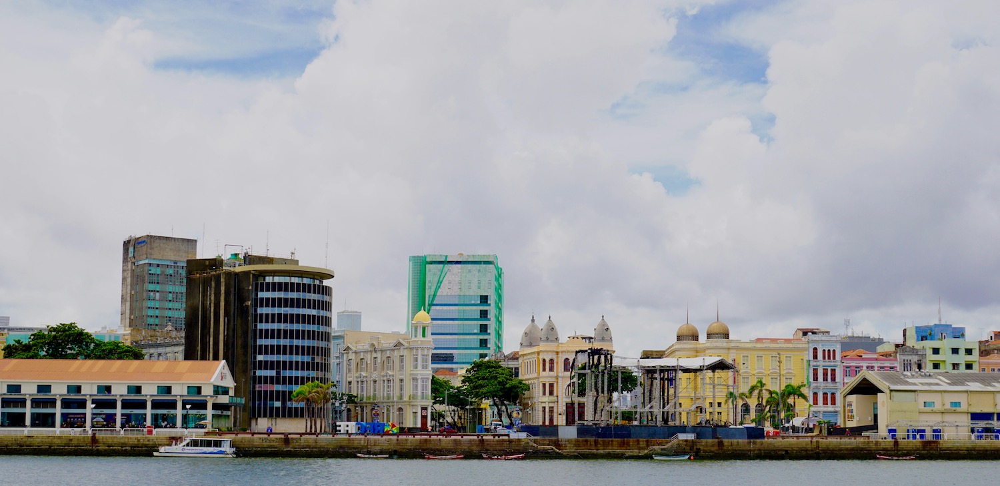

Hintergrund
-

Mein erster Presseartikel
Im Januar 2018 ist der erste Presseartikel über Bolo de Rolo Berlin erschienen. Ihr könnt ihn hier sehr gern lesen! Viel Spass!
Der Artikel ist auch hier verfügbar.
-
Wie serviert man den Bolo de Rolo am besten?
Am besten isst man den Kuchen in dünnen Scheiben (ca. jeweils 0.5 cm) geschnitten und isst ihn bei Zimmertemperatur.
Eiscreme, milder Käse und eine Tasse Kaffee passen super dazu.
-
Was macht ihn so besonders ...
... und warum habe ich neue Geschmacksrichtungen entwickelt?
In Pernambuco, Brasilien, wird der Kuchen traditionell mit Guave hergestellt. Für viele von uns ist diese Frucht fast unbekannt - vielleicht kennen sie manche dem Namen nach, aber sicherlich ist den wenigsten der Geschmack vertraut.
Eine Auswahl der besonderen Früchte, die manchem eventuell noch nicht so bekannt sind, list ich euch gern einmal auf:
- Guave (Goiaba), ist eine tropische Frucht, die man hierzulande schwer bis gar nicht frisch bekommt. Sie hat einen sehr charakteristischen Geruch und Geschmack.
- Papaya (Mamão), ist eine weitere tropische Frucht, die es ab und zu frisch zu kaufen gibt. Es handelt sich um eine sehr schöne grüne Frucht mit orangenem Fruchtfleisch und schwarzen Kernen.
- Maracujá (Passionsfrucht), ist eine kleine gelbe oder lila-farbene tropische Frucht einer Kletterpflanze. Das Fruchtfleisch ist eher flüssig, recht sauer und enthält schwarze Kerne, die man mitessen kann.
- Sanddorn, kennt ihr bestimmt. Er kommt in Deutschland vor allem an der Küste vor. Die kleinen orangenen Früchte wachsen an Sträuchern, sind sehr sauer und haben einen sehr spezifischen Geschmack. Es gibt Sandorn als Marmeladen, Fruchtmus, Saft und weiteren Süßigkeiten.
-

Was macht der Hahn im Logo?
Eine kurze Erklärung.
Wie bin ich eigentlich auf das Logo gekommen?
Zunächst natürlich der Name des Kuchens Bolo de Rolo.
Der Link zu Berlin durfte natürlich auch nicht fehlen.
Cake ist schlussendlich ein Hinweis darauf worum es sich eigentlich handelt.
Abschließend durfte auch ein typisches Symbol der Ursprungsstadt nicht fehlen. Recife ist sehr bekannt für seinen Karneval und dafür steht bereits seit 1978 der Hahn - Galo da Madrugada.
-

Die Gechichte des Kuchens
... noch eine kurze Erklärung.
Der Ursprung des Kuchens ist der portugiesische Colchão de Noiva (port. sinngemäß Brautbett), ein ursprünglich aus dem Ort Taviraan der Algarve stammender Kuchen. Vermutlich kam der Bolo de Rolo bereits im 17. Jahrhundert nach Pernambuco.
Pernambuco mit der Hauptstadt Recife liegt im Nordosten Brasiliens.
Die Damen der wohlhabenden Geschäftsleute konnten hier jedoch nicht die in Portugal üblichen Marmeladen aus Birnen oder Quitten (port.: Marmelo) verwenden, ebenso waren Zutaten wie Mandeln, Pinienkerne oder Ingwer in Brasilien schwer zu haben. In der Folge ersetzten sie diese mit regionalen Fruchtzubereitungen, neben Cashewnuss und -frucht, Banane oder Ananas wurde vor allem Goiaba (dt.: Guave) verwendet.
Ausserdem rollten sie den Kuchen wobei die einzelnen Schichten immer und immer dünner wurden. Der Kuchen wurde so dann als "obligatorisches" Dessert den Gästen serviert. Der Bekanntheitsgrad des Kuchens nahm stetig zu und wurde auch über die Bundesstaatsgrenzen hinaus in ganz Brasilien bekannt.
So war der Bolo de Rolo als eine traditionelle Spezialität Pernambucos bereits lange etabliert, bevor mit der Übersiedlung des portugiesischen Königshauses 1808 nach Rio de Janeiro auch der Einfluss französischer Kultur im Land spürbar wurde, und sich auch gastronomisch bemerkbar machte.
So blieb der Kuchen eine Spezialität Pernambucos, die im Wesentlichen bis heute unverändert geblieben ist.
Der Kuchen wurde 2007 als kulturelles Erbe Pernambucos durch das Parlament des brasilianischen Bundesstaates anerkannt. Der Kuchen wird in sehr dünnen Scheiben gegessen, gerne auch mit einer Tasse Kaffee und einem Stück Käse oder einer Kugel Eis gegessen (Source: Wikipedia, Fundação Joaquim Nabuco)
-
Etwas über mich
Ich, Theresa, repräsentiere nach langjährigem Kontakt mit Brasilien genauso wie der Bolo de Rolo Berlin die personalisierte Brücke zwischen brasilianischer - eigentlich Pernambucanischer - und deutscher Kultur.
Ich habe mich eigentlich schon immer sehr gern mit dem Kochen und gesunder, nachhaltiger Ernährung beschäftigt (obwohl Kuchen natürlich nicht wirklich gesund ist :) ). Allerdings habe ich eine völlig andere Richtung eingeschlagen und zunächst Geoökologie studiert. Aufgrund eines kleinen Praktikums in Ouro Preto (Minas Gerais) konnte ich meine ersten Erfahrungen in Brasilien machen.
Diese Erfahrung hat eigentlich mein Leben ziemlich umgekrempelt und sehr stark beeinflusst - da ich mich sofort zuhause gefühlt habe.
So kam es dann, dass ich immer und immer wieder zurück nach Brasilien kam - mal habe ich in Campinas (São Paulo) studiert, mal eine Forschungsreise durch den Nordosten Brasiliens gemacht (von Natal nach Salvador nach Palmas) und mal in einem kleinen Forschungsprojekt in Curitiba mitgewirkt.
Für meine Doktorarbeit bin ich dann noch einmal nach Brasilien zurückgekehrt bis ich mich dann aus privaten Gründen schließlich aus der Forschung zurückgezogen habe.
Zurück in Berlin, wollte ich gerne etwas aus Brasilien hierher holen, was beide Welten miteinander verbinden kann und vielleicht dem einen oder Anderen hier mit etwas Süßem ein Stück-weit glücklicher macht.
In der Brasilienkarte findest du bestimmt auch die Orte, auf die ich mich hier beziehe, wieder.